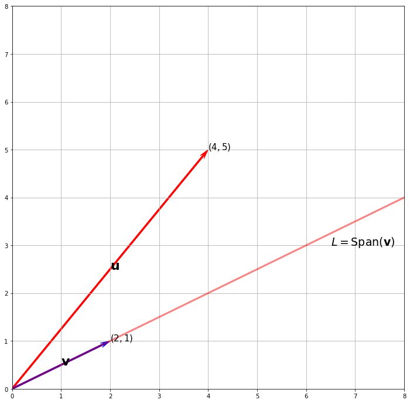
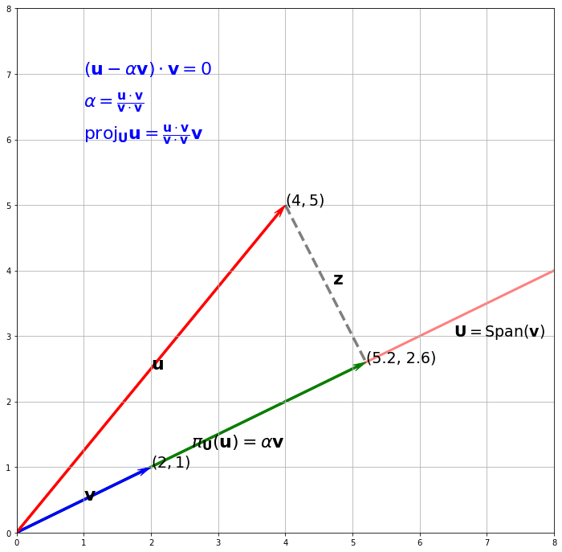
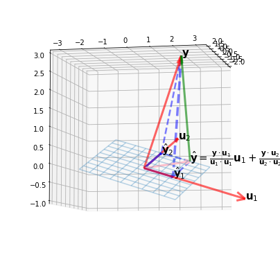

Orthogonal Projection
Orthogonal Projections
Most derivations are written in my Ipad.
Algebraic Definition (Orthogonal Projections)
Let \(\V\) be the ambient vector space. A projection on a vector subspace \(\U \subseteq \V\) is a linear mapping \(\pi: \V \to \U\) such that \(\pi^2 = \pi\). If \(\V\) is an inner product space, then \(\pi\) can be called an orthogonal projection.
Definition (Projection Matrix)
We can verify that \(\pi\) is indeed a linear transformaton. Recall that linear transformation can be expressed by transformation matrices. Thus we define projection matrices to be \(\P_\pi\) such that \(\P_\pi^2 = \P\).
Derivation of Projection onto a Line \(U\)1
Projection onto the x-axis
In page 84, the author said if the vector \(\x\) is of unit length, then projecting on the horizontal axis yields a projection vector to be \(\cos(\omega)\). This may be confusing at first if you derive it using formula since we see that
where did the unit vector \(\hat{\b} = \frac{\b}{||\b||}\) go? The confusion lies in two folds, one is author mentioned that this is only true when projecting onto the horizontal axis (x-axis), and secondly, the abuse of notation of vector where I misunderstood \(\cos(\omega)\) as the "projection vector". In fact, if we are projecting on the horizontal axis, then the basis vector \(\b\) is just \(\begin{bmatrix}1 \\0 \end{bmatrix}\) and we have the projection vector to be actually
and so when mentioned loosely, we can say that the projection vector is just \(\cos(\omega)\).
Derivation of Projection onto a General Subspace \(U\)23
The derivation using orthogonal complement provides a more intuitive understanding!
Projection Onto Lower Dimensional Subspace
The example here will tell you that given a vector \(\x \in \R^3\), it can be projected onto a lower dimensional subspace with minimal information loss since their distance is lowest. One thing to not get confused is that the projected vector is still in \(\R^3\), but it exists in a lower dimensional subspace \(\U \subset \R^3\) embedded in \(\R^3\) with 2 dimensions.
Python Plot (A Visualization of Projection)
Suppose we have \(\u = \begin{bmatrix} 4 \\ 5 \end{bmatrix}\), \(\v = \begin{bmatrix} 2 \\ 1 \end{bmatrix}\). Consider the subspace \(\U\) spanned by \(\v\). We first plot the graph without the projection vector.
The plots and contents (including the visualization of the decomposition) below are entirely credited to MacroAnalyst's GitHub Repo5.
import matplotlib.pyplot as plt
import matplotlib as mpl
import numpy as np
from mpl_toolkits.mplot3d import Axes3D
import scipy as sp
import scipy.linalg
import scipy.spatial
import sympy as sy
sy.init_printing()
fig, ax = plt.subplots(figsize=(12, 12))
vects = np.array([[4, 5], [2, 1]])
colr = ["red", "blue"]
cordt = ["$(4, 5)$", "$(2, 1)$"]
vec_name = ["$\mathbf{u}$", "$\mathbf{v}$"]
for i in range(2):
ax.arrow(
0,
0,
vects[i][0],
vects[i][1],
color=colr[i],
width=0.03,
length_includes_head=True,
head_width=0.1, # default: 3*width
head_length=0.2,
overhang=0.4,
)
ax.text(x=vects[i][0], y=vects[i][1], s=cordt[i], size=15)
ax.text(x=vects[i][0] / 2, y=vects[i][1] / 2, s=vec_name[i], size=22)
################################### Subspace L ############################
x = np.linspace(0, 8.1)
y = 1 / 2 * x
ax.plot(x, y, lw=3, color="red", alpha=0.5)
ax.text(x=6.5, y=3, s="$L = \operatorname{Span(\mathbf{v})}$", size=19)
ax.axis([0, 8, 0, 8])
ax.grid()

Next, we plot the projection vector \(\pi_{\U}(\u)\) onto \(\U\).
u = np.array([4, 5])
v = np.array([2, 1])
alpha = (u @ v) / (v @ v) # the lambda coordinates
print(alpha)
proj_vec = alpha * v
print(proj_vec)
2.6
[5.2 2.6]
fig, ax = plt.subplots(figsize=(12, 12))
vects = np.array([[4, 5], [2, 1], [5.2, 2.6]])
colr = ["red", "blue", "green"]
cordt = ["$(4, 5)$", "$(2, 1)$", "(5.2, 2.6)"]
vec_name = [
"$\mathbf{u}$",
"$\mathbf{v}$",
r"$\pi_{\mathbf{U}}(\mathbf{u}) = \alpha\mathbf{v}$",
]
for i in range(3):
ax.arrow(
0,
0,
vects[i][0],
vects[i][1],
color=colr[i],
width=0.03,
length_includes_head=True,
head_width=0.1, # default: 3*width
head_length=0.2,
overhang=0.4,
zorder=-i,
)
ax.text(x=vects[i][0], y=vects[i][1], s=cordt[i], size=19)
ax.text(x=vects[i][0] / 2, y=vects[i][1] / 2, s=vec_name[i], size=22)
##################################### Components of y orthogonal to u ##########################
point1 = [4, 5]
point2 = [5.2, 2.6]
line1 = np.array([point1, point2])
ax.plot(line1[:, 0], line1[:, 1], c="k", lw=3.5, alpha=0.5, ls="--")
ax.text(4.7, 3.8, "$\mathbf{z}$", size=22)
################################### Subspace L ############################
x = np.linspace(0, 8.1)
y = 1 / 2 * x
ax.plot(x, y, lw=3, color="red", alpha=0.5, zorder=-3)
ax.text(x=6.5, y=3, s="$\mathbf{U} = \operatorname{Span(\mathbf{v})}$", size=19)
ax.axis([0, 8, 0, 8])
ax.grid()
#################################### Formula ################################
ax.text(
x=1,
y=7,
s=r"$(\mathbf{u}- \alpha \mathbf{v})\cdot \mathbf{v}= 0$",
size=22,
color="b",
)
ax.text(
x=1,
y=6.5,
s=r"$\alpha = \frac{\mathbf{u} \cdot \mathbf{v}}{\mathbf{v}\cdot \mathbf{v}}$",
size=22,
color="b",
)
ax.text(
x=1,
y=6,
s=r"$\operatorname{proj}_{\mathbf{U}}\mathbf{u}=\frac{\mathbf{u}\cdot\mathbf{v}}{\mathbf{v}\cdot\mathbf{v}}\mathbf{v}$",
size=22,
color="b",
)
plt.show()

Python Plot (A Visualization of Orthogonal Decomposition)
To generalize the orthogonal projection in the higher dimension \(\mathbb{R}^n\), we summarize the idea into the orthogonal decomposition theorem.
Let \(W\) be a subspace of \(\mathbb{R}^{n}\). Then each \(\mathbf{y}\) in \(\mathbb{R}^{n}\) can be written uniquely in the form $$ \mathbf{y}=\hat{\mathbf{y}}+\mathbf{z} $$ where \(\hat{\mathbf{y}}\) is in \(W\) and \(\mathbf{z}\) is in \(W^{\perp} .\) In fact, if \(\left\{\mathbf{u}_{1}, \ldots, \mathbf{u}_{p}\right\}\) is any orthogonal basis of \(W,\) then $$ \hat{\mathbf{y}}=\frac{\mathbf{y} \cdot \mathbf{u}{1}}{\mathbf{u} \cdot \mathbf{u}{1}} \mathbf{u}+\cdots+\frac{\mathbf{y} \cdot \mathbf{u}{p}}{\mathbf{u} \cdot \mathbf{u}{p}} \mathbf{u} $$ and \(\mathbf{z}=\mathbf{y}-\hat{\mathbf{y}}\).
In \(\mathbb{R}^{2}\), we project \(\mathbf{y}\) onto subspace \(L\) which is spanned by \(\mathbf{u}\), here we generalize the formula for \(\mathbb{R}^{n}\), that \(\mathbf{y}\) is projected onto \(W\) which is spanned by \(\left\{\mathbf{u}_{1}, \ldots, \mathbf{u}_{p}\right\}\).
A Visual Example in \(\mathbb{R}^{3}\)
A subspace \(W=\operatorname{Span}\left\{\mathbf{u}_{1}, \mathbf{u}_{2}\right\}\), and a vector \(\mathbf{y}\) is not in \(W\), decompose \(\mathbf{y}\) into \(\hat{\mathbf{y}} + \mathbf{z}\), and plot them.
where
The projection onto \(W\) in \(\mathbb{R}^3\) is
The codes for plotting are quite redundent, however exceedingly intuitive.
######################## Subspace W ##############################
s = np.linspace(-.5, .5, 10)
t = np.linspace(-.5, .5, 10)
S, T = np.meshgrid(s, t)
X1 = 2 * S - 2 * T
X2 = 5 * S + T
X3 = -S + T
fig = plt.figure(figsize = (7, 7))
ax = fig.add_subplot(projection='3d')
ax.plot_wireframe(X1, X2, X3, linewidth = 1.5, alpha = .3)
########################### vector y ###############################
y = np.array([1, 2, 3])
u1, u2 = np.array([2, 5, -1]), np.array([-2, 1, 1])
vec = np.array([[0, 0, 0, y[0], y[1], y[2]]])
X, Y, Z, U, V, W = zip(*vec)
ax.quiver(X, Y, Z, U, V, W, length=1, normalize=False, color = 'red', alpha = .6,arrow_length_ratio = .08, pivot = 'tail',
linestyles = 'solid',linewidths = 3)
ax.text(y[0], y[1], y[2], '$\mathbf{y}$', size = 15)
########################### vector u1 and u2 ###############################
vec = np.array([[0, 0, 0, u1[0], u1[1], u1[2]]])
X, Y, Z, U, V, W = zip(*vec)
ax.quiver(X, Y, Z, U, V, W, length=1, normalize=False, color = 'red', alpha = .6,arrow_length_ratio = .08, pivot = 'tail',
linestyles = 'solid',linewidths = 3)
vec = np.array([[0, 0, 0, u2[0], u2[1], u2[2]]])
X, Y, Z, U, V, W = zip(*vec)
ax.quiver(X, Y, Z, U, V, W, length=1, normalize=False, color = 'red', alpha = .6,arrow_length_ratio = .08, pivot = 'tail',
linestyles = 'solid',linewidths = 3)
ax.text(u1[0], u1[1], u1[2], '$\mathbf{u}_1$', size = 15)
ax.text(u2[0], u2[1], u2[2], '$\mathbf{u}_2$', size = 15)
########################### yhat ###############################
alpha1 = (y@u1)/(u1@u1)
alpha2 = (y@u2)/(u2@u2)
yhat1 = alpha1*u1
yhat2 = alpha2*u2
yhat = yhat1 + yhat2
vec = np.array([[0, 0, 0, yhat1[0], yhat1[1], yhat1[2]]])
X, Y, Z, U, V, W = zip(*vec)
ax.quiver(X, Y, Z, U, V, W, length=1, normalize=False, color = 'blue', alpha = .6,arrow_length_ratio = .08, pivot = 'tail',
linestyles = 'solid',linewidths = 3, zorder= 3)
vec = np.array([[0, 0, 0, yhat2[0], yhat2[1], yhat2[2]]])
X, Y, Z, U, V, W = zip(*vec)
ax.quiver(X, Y, Z, U, V, W, length=1, normalize=False, color = 'blue', alpha = .6,arrow_length_ratio = .08, pivot = 'tail',
linestyles = 'solid',linewidths = 3, zorder= 3)
vec = np.array([[0, 0, 0, yhat[0], yhat[1], yhat[2]]])
X, Y, Z, U, V, W = zip(*vec)
ax.quiver(X, Y, Z, U, V, W, length=1, normalize=False, color = 'pink', alpha = 1,arrow_length_ratio = .12, pivot = 'tail',
linestyles = 'solid',linewidths = 3, zorder= 3)
ax.text(yhat1[0], yhat1[1], yhat1[2], '$\hat{\mathbf{y}}_1$', size = 15)
ax.text(yhat2[0], yhat2[1], yhat2[2], '$\hat{\mathbf{y}}_2$', size = 15)
ax.text(x = yhat[0], y = yhat[1], z = yhat[2],
s = r'$\hat{\mathbf{y}}=\frac{\mathbf{y} \cdot \mathbf{u}_{1}}{\mathbf{u}_{1} \cdot \mathbf{u}_{1}} \mathbf{u}_{1}+\frac{\mathbf{y} \cdot \mathbf{u}_{2}}{\mathbf{u}_{2} \cdot \mathbf{u}_{2}} \mathbf{u}_{2}=\hat{\mathbf{y}}_{1}+\hat{\mathbf{y}}_{2}$', size = 15)
########################### z ###############################
z = y - yhat
vec = np.array([[yhat[0], yhat[1], yhat[2], z[0], z[1], z[2]]])
X, Y, Z, U, V, W = zip(*vec)
ax.quiver(X, Y, Z, U, V, W, length=1, normalize=False, color = 'green', alpha = .6,arrow_length_ratio = .08, pivot = 'tail',
linestyles = 'solid',linewidths = 3)
############################ Dashed Line ####################
line1 = np.array([y, yhat1])
ax.plot(line1[:,0], line1[:,1], line1[:,2], c = 'b', lw = 3.5,alpha =0.5, ls = '--')
line2 = np.array([y, yhat2])
ax.plot(line2[:,0], line2[:,1], line2[:,2], c = 'b', lw = 2.5,alpha =0.5, ls = '--')
line3 = np.array([yhat, yhat2])
ax.plot(line3[:,0], line3[:,1], line3[:,2], c = 'b', lw = 2.5,alpha =0.5, ls = '--')
line4 = np.array([yhat, yhat1])
ax.plot(line4[:,0], line4[:,1], line4[:,2], c = 'b', lw = 2.5,alpha =0.5, ls = '--')
############################# View Angel
ax.view_init(elev=-6, azim=12)

-
Derivation of Projection onto a Line: Cambridge University Press: Mathematics for Machine Learning, 2020. (pp. 82-85) ↩
-
Derivation of Projection onto a General Subspace: Cambridge University Press: Mathematics for Machine Learning, 2020. (pp. 85-88) ↩
-
Derivation of Projection onto a General Subspace: Khan's Academy Projection onto a General Subspace ↩
-
Projection Onto Lower Dimensional Subspace: Cambridge University Press: Mathematics for Machine Learning, 2020. (pp. 87-88) ↩
-
Plotting Projections in Python: Plot Projections in Python ↩